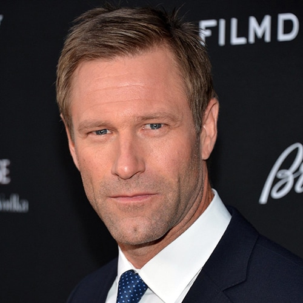
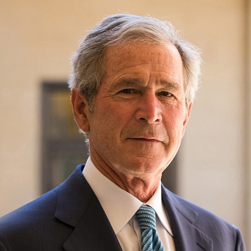
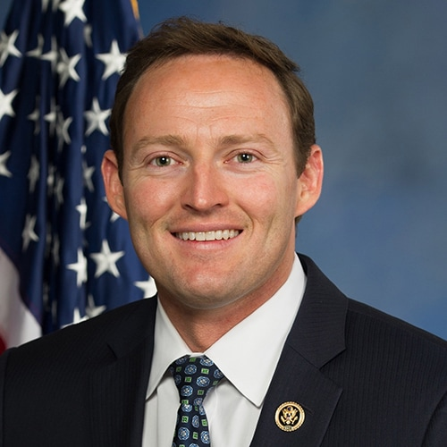
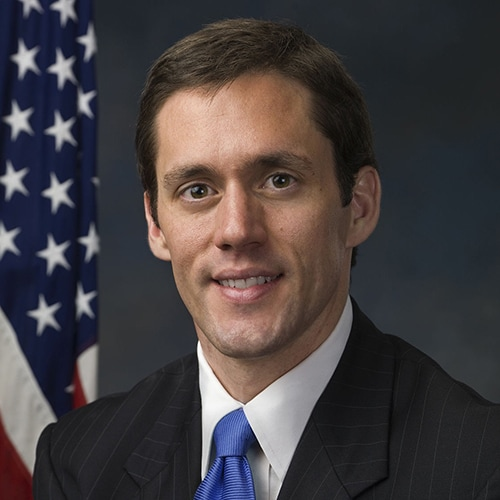
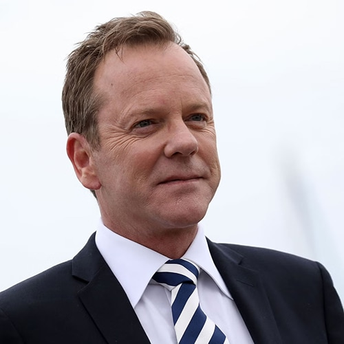
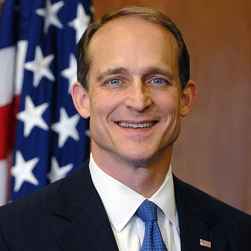

Nemzetünk Kormánya
Húsz miniszter, egyetlen küldetéssel. A világ legprosperálóbb nemzetének kormánya szakértelemre, mérhető teljesítményre és az alkotmányos rend iránti lojalitásra épül. Célja, hogy 212 millió polgárunk számára magas életszínvonalat, biztonságot, digitális közszolgáltatásokat és kiszámítható jövőt biztosítson.
Stratégiai kiválasztás és hatékonyság
Waikiki kormánya a modern államszervezés egyik legmerészebb és legkifinomultabb intézményi modellje, amely szakít a hagyományos politikai elitképzés konvencióival. A kabinet összetétele nem pártok közötti alkukból és belső hatalmi versengésből fakad, hanem szakértelmen alapuló kiválasztásból, a vállalati szférából ismert vezetői toborzásból, valamint a nyilvános szerepvállalás és a közbizalom építésének tudatos összehangolásából. A kiválasztás alapja a teljesítmény, a lojalitás az alkotmányos rendhez, valamint a nemzetközi hitelesség, így a kabinet egyszerre képes a stratégiai célok következetes képviseletére és a közszolgáltatásokat nyújtó állam mindennapi működtetésére.
Waikiki elnökei


A jelenlegi kormány




Történelmi kormánytagok
| Tisztség | 2000 - 2004 | 2005 - 2009 | 2010 - 2014 | 2015 - 2019 | 2020 - 2024 | 2025 - 2029 |
|---|---|---|---|---|---|---|
| Elnök | John Boehner | Rick Santorum | Aaron Eckhart | George Bush | George Bush | Aaron Eckhart |
| Kereskedelmi miniszter | Ayden Roberts | Ayden Roberts | Ayden Roberts | Ayden Roberts | Ayden Roberts | Rick Santorum |
| Belügyminiszter | Rick Santorum | John Boehner | John Boehner | John Boehner | John Boehner | John Boehner |
| Külügyminiszter | Enrique Pena Nieto | Donald Evans | Jason Furman | Aaron Eckhart | Aaron Eckhart | George Bush |
| Pénzügyminiszter | Peter Lynch | Michael J. Cavanagh | Michael J. Cavanagh | Scott Walker | Scott Walker | Scott Walker |
| Igazságügyi miniszter | Sebastian Stark | Alejandro Ramirez | Marilyn R. Reid | Paul Ryan | Paul Ryan | Marilyn R. Reid |
| Egészségügyi miniszter | Rogelio Olmeda | Rogelio Olmeda | Tommy Thompson | Jonathan Gruber | Jonathan Gruber | Jonathan Gruber |
| Kulturális miniszter | Jorge Ramos | Rupert Murdoch | Fernando Henrique Cardoso | George LeMieux | George LeMieux | Fernando Henrique Cardoso |
| Energetikai miniszter | Eva Longoria | Sherry Rehman | Spencer Abraham | Carte Goodwin | Carte Goodwin | Carte Goodwin |
| Oktatási miniszter | Ellen Ochoa | David Vitter | Rod Paige | David Vitter | David Vitter | Tom Kirkman |
| Mezőgazdasági miniszter | Gabriel Prieto | Gabriel Prieto | Ed Schafer | Michel Temer | Rick Santorum | Jack Bowman |
| Turisztikai miniszter | Steve Preston | Nicole Minetti | Steve Preston | Nicole Minetti | Nicole Minetti | Diane Hunter |
| Hadügyminiszter | George Zambellas | Morgan Clark | Dick Cheney | Morgan Clark | Morgan Clark | Mark Milley |
| Védelmi miniszter | - | Logan Davis | Winnefeld Daniels | Winnefeld Daniels | Winnefeld Daniels | John Bolton |
| Iparfejlesztési miniszter | - | Salvador Pardo Cruz | Salvador Pardo Cruz | Salvador Pardo Cruz | Thomas Boone | Thomas Boone |
| Tudományügyi miniszter | - | Tommy Thompson | Timothy John | Timothy John | Timothy John | Timothy John |
| Infrastrukturális miniszter | - | - | Rick Santorum | Mary Bono Mack | Mary Bono Mack | Mary Bono Mack |
| Környezetvédelmi miniszter | - | - | Mike Leavitt | Mitt Romney | Darius Tanz | Darius Tanz |
| Munkaügyi miniszter | - | - | - | Steve Preston | Matt Damon | Steve Preston |
| Erőforrásügyi miniszter | - | - | - | Ruby Dhalla | Ruby Dhalla | - |
| Fejlesztési miniszter | - | - | - | Rick Santorum | Ricardo Gomez | - |
| Bevándorlásügyi miniszter | - | - | - | - | - | Mickey Haller |
| Családtámogatási miniszter | - | - | - | - | - | Kate Beckinsale |
Diktátori kabinet
Kormányzati ügynökségek
| Tisztség | 2000 - 2007 | 2008 - 2015 | 2016 - 2023 | 2024 - 2031 |
|---|---|---|---|---|
| Nemzeti Bank elnöke | Robert Menéndez | Jessica Walker | Michael J. Cavanagh | Jessica Walker |
| Médiatanács elnöke | Marc Benioff | Rupert Murdoch | Rupert Murdoch | Colin Farrell |
| Főbíró | Marilyn R. Reid | Sebastian Stark | Sebastian Stark | Sebastian Stark |
| Főparancsnok | Winnefeld Daniels | Logan Davis | Logan Davis | Logan Davis |
| Titkosszolgálat igazgatója | Alejandro Ramirez | Elena Martinez | Elena Martinez | Smith Edward |
| Legfőbb ügyész | Dias Toffoli | Paul Ryan | Marilyn R. Reid | Vincent Kartheiser |